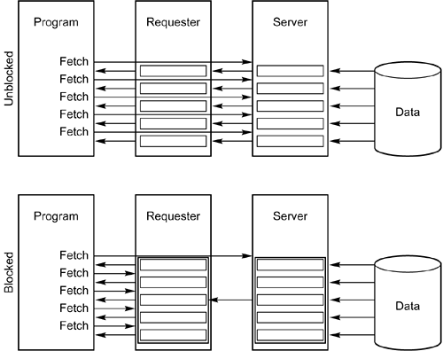

|
|
< Day Day Up > |
|
Block FetchDB2 employs a method of reducing network communication known as block fetch. Communication over the network can be the largest bottleneck in a distributed application. If the number of messages sent over the network can be reduced, performance can be significantly increased. If block fetch were not utilized when an application accessed rows of data, each one would have to be passed over the network as a single message. One row equates to one message. When block fetch is invoked, the retrieved rows are grouped into a large block of data. This block of data is stored in a buffer called the message buffer. The message buffer, after it is filled, is transmitted over the network as a single message. Thus, block fetch allows large blocks of data (instead of many single messages) to be transferred. Figure 44.3 shows the difference between blocked and unblocked data access. Obviously, the amount of network communication diminishes when blocks of data are transmitted instead of single rows of data. Figure 44.3. Block fetch. Coding Cursors to Encourage Block FetchBlock fetch can be used only by read-only cursors. If data can be updated through the cursor, DB2 must send the data over the network one row at a time. Sometimes, DB2 cannot properly determine whether a cursor is read-only. This type of cursor is called an ambiguous cursor. However, there are techniques you can use when coding cursors in an application program to ensure that read-only cursors are known to DB2 to be read-only. These types of cursors are called unambiguous cursors. You can ensure that a cursor is unambiguous in three ways: using the FOR READ ONLY (or FOR FETCH ONLY) clause, using certain SQL constructs, or when the semantics dictate that the cursor is not updateable. FOR READ ONLY (or FOR FETCH ONLY)You can append the FOR READ ONLY (or FOR FETCH ONLY) clause to a cursor to indicate that the cursor is read-only. As a rule of thumb, always specify FOR READ ONLY when a distributed query is identified as being read-only. Even if the query is read-only by nature (see the next section), it is still best to code the cursor using FOR READ ONLY, thereby ensuring that the cursor is unambiguous and can utilize block fetch. NOTE The FOR READ ONLY clause provides the same function as FOR FETCH ONLY. The FOR READ ONLY construct is preferable to the FOR FETCH ONLY construct because it is ODBC-compliant. Cursors That Are Read-Only by NatureCertain cursors, by definition, are always read-only. Any of the following conditions causes a read-only cursor:
Even though these conditions cause the cursor to be read-only, you should still specify the FOR READ ONLY clause. Doing so enhances clarity and is helpful for documentation purposes. Semantically Non-Updateable CursorsCertain types of cursors are semantically not updateable, even when not defined using FOR READ ONLY or FOR FETCH ONLY. They are read-only cursors because they are included within an application program that avoids updates. This type of cursor exists within a program that conforms to the following guidelines:
Avoid Ambiguous CursorsAvoiding ambiguous cursors greatly reduces the administrative burden of identifying updateable and read-only cursors. Likewise, it makes tuning easier because the identification of cursors that are candidates for block fetch becomes easier. Avoiding ambiguous cursors is simple. To do so, you should establish a global shop standard that requires the specification of the FOR clause on every cursor. Read-only cursors should specify the FOR FETCH ONLY clause. Updateable cursors should specify the FOR UPDATE OF clause. Data CurrencyBlock fetch is used as the default for ambiguous cursors if the package or plan was bound with the CURRENTDATA(NO) parameter. CURRENTDATA(NO) indicates that data currency is not a prerequisite for this package or plan, thereby enabling DB2 to use block fetch. To disable block fetch for ambiguous cursors, specify CURRENTDATA(YES). However, doing so is not generally recommended. To determine which plans and packages were bound with CURRENTDATA(NO), issue the following queries against the DB2 Catalog:
SELECT NAME, CREATOR, BOUNDTS, EXPREDICATE
FROM SYSIBM.SYSPLAN P
ORDER BY NAME;
SELECT COLLID, NAME, VERSION, CREATOR,
BINDTIME, DEFERPREP
FROM SYSIBM.SYSPACKAGE
ORDER BY COLLID, NAME, VERSION;
For plans, when the EXPREDICATE column is set to B, blocking is enabled. For packages, when the DEFERPREP column is set to B, blocking is enabled. In both cases, a value of C indicates that CURRENTDATA(YES) was specified. Specify CURRENTDATA(NO)Binding packages and plans with the CURRENTDATA(NO) parameter encourages the use of block fetch. This use, in turn, should enhance the overall performance of distributed queries. The DB2 default value for the CURRENTDATA option is CURRENTDATA(YES). Limited Versus Continuous Block FetchThe two types of block fetch are limited and continuous. Each method of block fetching has its benefits and drawbacks. Limited Block FetchLimited block fetch can be used by application-directed DRDA units of work. Refer to Figure 44.4. When limited block fetch is used, synchronous processing occurs. Figure 44.4. Limited block fetch.
Limited block fetch uses a single conversation to facilitate communication between the requester and the server subsystems. Continuous Block FetchContinuous block fetch operates asynchronously. Only system-directed, private-protocol units of work can use it. Each open cursor is assigned a separate conversation when continuous block fetch is used. Refer to Figure 44.5. Figure 44.5. Continuous block fetch.Each open cursor has a buffer area on both the server and the requester. The server continues to fill its buffers with results and transmit them to the requester until it reaches VTAM pacing limits. In other words, the server continues processing behind the scenes. When a sufficient number of conversations are not available to DB2 (one per open cursor), processing reverts to limited block fetch. A Comparison of Continuous and Limited Block FetchThe big question is "Which is the better type of block fetch: continuous or limited?" The answer, of course, is "It depends." You must consider the following two trade-offs. In general, continuous block fetch is more efficient than limited block fetch because fewer messages must be transmitted. However, limited block fetch consumes fewer resources than continuous block fetch because each cursor does not require a conversation. Programs can use static SQL when they use application-directed DRDA distributed requests. Therefore, static SQL is available only with limited block fetch. So, the performance gain that can be achieved by continuous block fetch through a reduction in network traffic can be mitigated or even eliminated by the requirement to use dynamic SQL. For a synopsis of the trade-offs between continuous and limited block fetch, refer to Table 44.1.
|
|
|
< Day Day Up > |
|